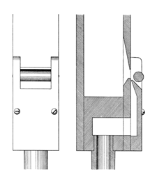
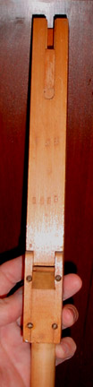
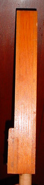

Saxophone English

|
Cor Glorieux French Saxophone English |
|
|
In 1897 Haskell invented a labial Saxophone stop, and first used it in the Church of the Holy Trinity, Philadelphia, Pennsylvania, USA. In The Art of Organ-Building, Audsley provides the drawing reproduced here, along with the following description:
This fine stop is of 8 ft. pitch, and extends throughout the manual compass. Its scale is as follows: CC pipe, 3 5/16 inches in width by 4 3/16 inches in depth; C pipe, 2 inches in width by 2 9/16 inches in depth; c1 pipe, 1 3/16 inches in width by 1 17/32 inches in depth; and c2 pipe, 3/4 inch in width by 31/32 inch in depth. The accompanying illustration, which gives a Front View and Section of the sound-producing portion of the middle c1 pipe, shows a formation almost identical with that in [Haskell's] labial Oboe. The block is sunk 3/4 inch below the lower lip. The mouth is inverted, and its lower lip is sloped on the inside of the pipe and slightly rounded. The upper lip is filed to a very thin edge in the same manner as that of the Oboe pipe. The cap and the large cylindrical harmonic bridge are so clearly shown that it is unnecessary to describe them. Both the face of the lower lip and the opposite edge of the cap are closely and sharply nicked. The mouth is a small fraction over two-sevenths its width in height. The body of the pipe is of the same dimensions throughout its length, and it is unslotted, being tuned by means of a metal shade at the top in the usual manner. The name �Cor Glorieux� was used by Estey for their labial Saxophone in church organs where the name �Saxophone� was deemed inappropriate. The two photographs show a Saxophone pipe from Estey opus 1938, c. 1921 (courtesy of Brian Graham). See also Saxophone (reed).ExamplesCor Glorieux 8', Solo; Civic Auditorium, Sacramento, California, USA; Estey 1925. Saxophone 8', Great; Trinity Church, Camden, New Jersey, USA; Estey opus 1859. (Building & organ purchased by Victor Talking Machine Co. in early 1920's.) Saxophone 8', Choir; Massey Organ Amphitheater, Chautauqua, New York, USA; Warren 1907. Cor Glorieux; St. John the Evangelist, Binghamton, New York, USA; Estey 1926. Saxophone (labial) 8', Choir; First Baptist Church, Brattleboro, vermont, USA; Estey 1906. Saxophone, Solo; Claremont College, California, USA; Estey. BibliographyAudsley[1]: Physharmonika; Saxophone. Audsley[2]: I.XIII Saxophone; II.XXXIV Saxophone. Bonavia-Hunt[1]: Saxophone. Irwin[1]: Saxophone. Sumner[1]: Saxophone. |

  |
|
Original website compiled by Edward L. Stauff. For educational use only. CorGlorieux.html - Last updated 5 August 2008. |
Home Full Index |
{kind=link}
{kind=link}
{kind=link}